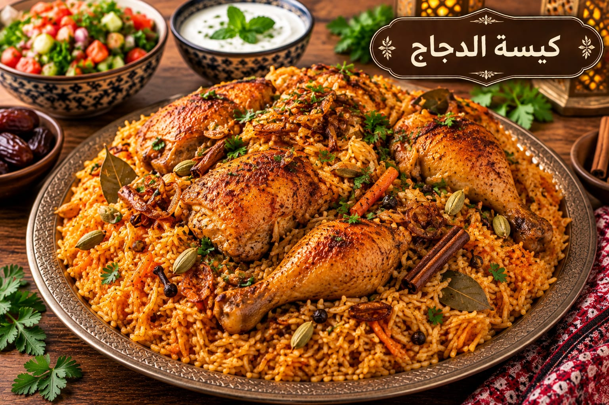

كبسة الدجاج
بالتوابل الخليجية

مقادير كبسة الدجاج
- 1 دجاجة
- 3 أكواب أرز بسمتي
- 1 بصلة
- 2 طماطم
- 2 ملعقة كبيرة معجون طماطم
- 1½ ملعقة صغيرة ملح
- 1 ملعقة صغيرة بهار كبسة
- ½ ملعقة صغيرة فلفل أسود
- 5 حبات هيل
- 2 ورق غار
- 4½ أكواب ماء أو مرق
طريقة عمل كبسة الدجاج
- حمري البصل ثم أضيفي الدجاج والبهارات وقلبيه حتى يتغير لونه.
- أضيفي الطماطم والمعجون والماء أو المرق واتركي الدجاج حتى ينضج.
- ارفعي الدجاج واضبطي كمية المرق ثم أضيفي الأرز المنقوع والمصفى.
- بعد الغليان خففي النار 18–20 دقيقة، أريحي الأرز 10 دقائق وقدميه مع الدجاج.